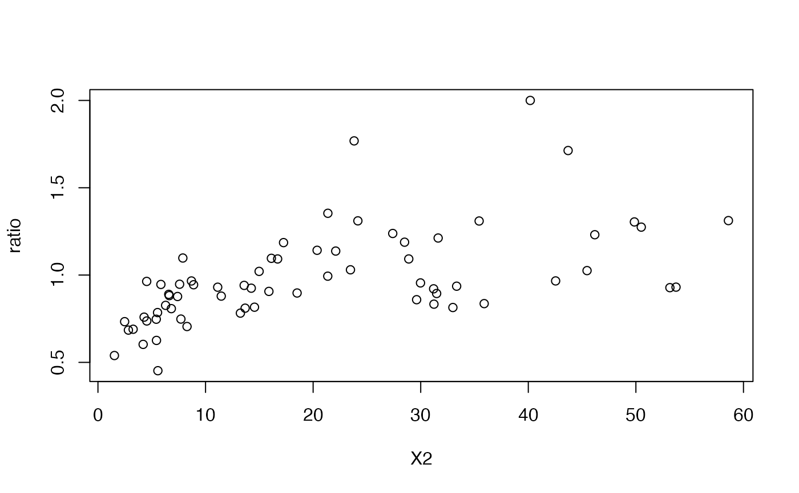

The function BS3() defines The Birnbaum-Saunders,
a two parameter distribution, for a gamlss.family object
to be used in GAMLSS fitting
using the function gamlss().
Value
Returns a gamlss.family object which can be used to fit a
BS3 distribution in the gamlss() function.
Details
The Birnbaum-Saunders with parameters mu and sigma
has density given by
\(f(x|\mu,\sigma) = \frac{(1-\sigma)y+\mu}{2\sqrt{2\pi\mu\sigma(1-\sigma)}y^{3/2}} \exp{\left[ \frac{-1}{2\sigma} \left( \frac{(1-\sigma)y}{\mu} + \frac{\mu}{(1-\sigma)y} - 2 \right) \right]} \)
for \(x>0\), \(\mu>0\) and \(0<\sigma<1\). In this parameterization \(Mode(X)=\mu\) and \(Var(X)=(\mu\sigma)^2(1+5\sigma^2/4)\).
References
Bourguignon, M., & Gallardo, D. I. (2022). A new look at the Birnbaum–Saunders regression model. Applied Stochastic Models in Business and Industry, 38(6), 935-951.
See also
dBS3.
Examples
# Example 1
# Generating some random values with
# known mu and sigma
y <- rBS3(n=50, mu=2, sigma=0.2)
# Fitting the model
require(gamlss)
mod1 <- gamlss(y~1, sigma.fo=~1, family=BS3)
#> GAMLSS-RS iteration 1: Global Deviance = 168.002
#> GAMLSS-RS iteration 2: Global Deviance = 164.5652
#> GAMLSS-RS iteration 3: Global Deviance = 161.2702
#> GAMLSS-RS iteration 4: Global Deviance = 159.0704
#> GAMLSS-RS iteration 5: Global Deviance = 158.017
#> GAMLSS-RS iteration 6: Global Deviance = 157.6542
#> GAMLSS-RS iteration 7: Global Deviance = 157.5525
#> GAMLSS-RS iteration 8: Global Deviance = 157.5278
#> GAMLSS-RS iteration 9: Global Deviance = 157.5224
#> GAMLSS-RS iteration 10: Global Deviance = 157.521
#> GAMLSS-RS iteration 11: Global Deviance = 157.5207
# Extracting the fitted values for mu and sigma
# using the inverse link function
exp(coef(mod1, what="mu"))
#> (Intercept)
#> 1.963156
exp(coef(mod1, what="sigma"))
#> (Intercept)
#> 0.2928277
# Example 2
# Generating random values for a regression model
# A function to simulate a data set with Y ~ BS3
if (FALSE) { # \dontrun{
gendat <- function(n) {
x1 <- runif(n)
x2 <- runif(n)
mu <- exp(1.45 - 3 * x1)
inv_logit <- function(x) 1 / (1 + exp(-x))
sigma <- inv_logit(2 - 1.5 * x2)
y <- rBS3(n=n, mu=mu, sigma=sigma)
data.frame(y=y, x1=x1, x2=x2)
}
set.seed(1234)
dat <- gendat(n=100)
mod2 <- gamlss(y~x1, sigma.fo=~x2,
family=BS3, data=dat,
control=gamlss.control(n.cyc=100))
summary(mod2)
} # }
# Example 3
# The response variable is the ratio between the average
# rent per acre planted with alfalfa and the corresponding
# average rent for other agricultural uses. The density of
# dairy cows (X2, number per square mile) is the explanatory variable.
library(alr4)
#> Loading required package: car
#> Loading required package: carData
#> Loading required package: effects
#> lattice theme set by effectsTheme()
#> See ?effectsTheme for details.
data("landrent")
landrent$ratio <- landrent$Y / landrent$X1
with(landrent, plot(x=X2, y=ratio))

mod3 <- gamlss(ratio~X2, sigma.fo=~X2,
data=landrent, family=BS3)
#> GAMLSS-RS iteration 1: Global Deviance = 65.753
#> GAMLSS-RS iteration 2: Global Deviance = 39.2056
#> GAMLSS-RS iteration 3: Global Deviance = 0.2741
#> GAMLSS-RS iteration 4: Global Deviance = -24.7118
#> GAMLSS-RS iteration 5: Global Deviance = -27.898
#> GAMLSS-RS iteration 6: Global Deviance = -27.9666
#> GAMLSS-RS iteration 7: Global Deviance = -27.9674
summary(mod3)
#> ******************************************************************
#> Family: c("BS3", "Birnbaum-Saunders - third parameterization")
#>
#> Call: gamlss(formula = ratio ~ X2, sigma.formula = ~X2, family = BS3,
#> data = landrent)
#>
#> Fitting method: RS()
#>
#> ------------------------------------------------------------------
#> Mu link function: log
#> Mu Coefficients:
#> Estimate Std. Error t value Pr(>|t|)
#> (Intercept) -0.312542 0.040942 -7.634 1.56e-10 ***
#> X2 0.010503 0.001835 5.725 3.10e-07 ***
#> ---
#> Signif. codes: 0 ‘***’ 0.001 ‘**’ 0.01 ‘*’ 0.05 ‘.’ 0.1 ‘ ’ 1
#>
#> ------------------------------------------------------------------
#> Sigma link function: logit
#> Sigma Coefficients:
#> Estimate Std. Error t value Pr(>|t|)
#> (Intercept) -3.41398 0.31153 -10.959 3.12e-16 ***
#> X2 0.01545 0.01218 1.269 0.209
#> ---
#> Signif. codes: 0 ‘***’ 0.001 ‘**’ 0.01 ‘*’ 0.05 ‘.’ 0.1 ‘ ’ 1
#>
#> ------------------------------------------------------------------
#> No. of observations in the fit: 67
#> Degrees of Freedom for the fit: 4
#> Residual Deg. of Freedom: 63
#> at cycle: 7
#>
#> Global Deviance: -27.96742
#> AIC: -19.96742
#> SBC: -11.14865
#> ******************************************************************
logLik(mod3)
#> 'log Lik.' 13.98371 (df=4)